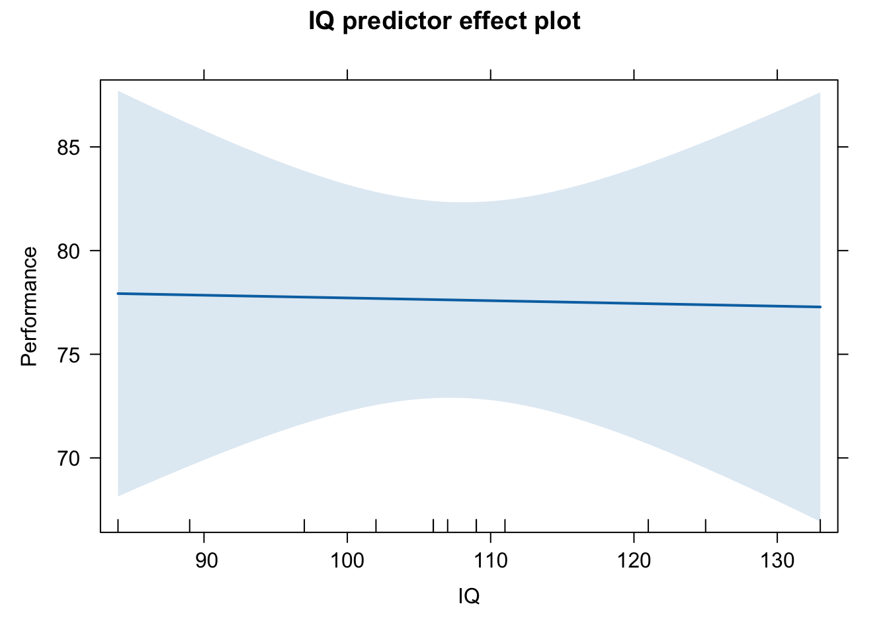
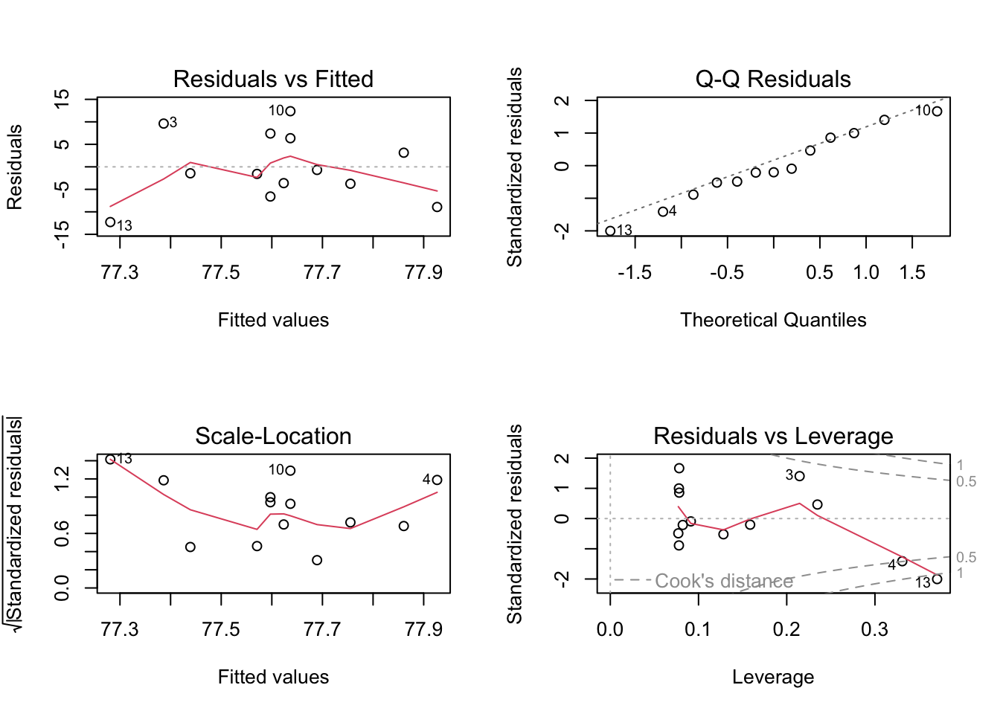

Regression models are wonderfully flexible. There are several variants of the basic model which are also the beginning of many other types of models which you may learn about if you go beyond an undergraduate degree! While we cover the basics in the next ten weeks, this is only the beginning.
Regression is an extension of a correlation analysis. Instead of having two numerical variables for which we describe an association or a relationship, we denote one of the variables a predictor and the other variable the outcome. When both continuous variables are standardised (explained later), the regression coefficient for the slope (\(b\)) is equivalent to Pearson’s r.
Additionally, the predictor variable need not be a continuous variable. If your only predictor in a simple regression is a binary variable - one with two possible discrete responses - then a simple regression is equivalent to an independent t-test.
A regression analysis will find the best possible set of values that predict values of the outcome variable given the observed values.
Model for simple regression
There is an equation for regression: This is the one I use in the lecture
\[
Y = b_0 + b_1*X_1+e
\]
This second equation is equivalent, it just uses different letters. This is the one that is used in WBA1 \[
Y = a + b_1*X_1+e
\] Where:
\(Y\) is the outcome variable - the values to be predicted. Sometimes called the criterion variable.
\(X\) is the predictor variable.
In ANOVA terms \(Y\) is the dependent variable and \(X\) is the independent variable.
\(b_0\) or \(a\) is the intercept term;
In ANOVA terms \(a\) is the grand mean.
\(b_1\) is the beta coefficient and represents the slope of change in \(Y\) - how \(Y\) changes with unit increases in \(X\):
when \(b\) = 1, a 1 unit increase in \(X\) predicts a 1 unit increase in \(Y\)
when \(b\) < 1, the rate of change between \(Y\) and \(X\) is slow and the slope is shallower
when \(b\) > 1, the rate of change between \(Y\) and \(X\) is faster and the slope is steeper
the sign of \(b\) tells the direction of the effect - positive or negative
\(e\) is the error term, the distance of each data point from the regression line
Up until now, your statistics learning has been involved in null hypothesis significance testing. The null hypothesis for a regression analysis is that the value of the slope is zero or in other words, the regression coefficient for \(b\) is 0, or in other words, there is no slope, only the intercept term.
Section 1: Longhand Calculations for Simple Regression - useful for WBA1 but not on the class test
Longhand calculations can be useful to some people for understanding the underlying relationships of both the formula to the data but also the relationships between the different parts of the model. There are three parts of a regression model: The intercept, the slope and the error term (or residual term)
In simple regression, where only one predictor is used, we can estimate the slope (\(\hat{b}\)) with a formula:
In words, the top line of the equation may read like: in the first brackets, multiply the paired observations of X and Y and add these all together; in the second brackets multiply the number of observations with the mean of the X variable and the mean of the Y variable. Take the result of the second term away from the results of the first term.
The bottom line may read as: in the brackets, multiply the squared observation of X by the number of observations. Second, square the observation in X. Thirdly, take away the result of the brackets from the squared observation of X and finally, add all those values together.
The slope is a result of dividing the top line by the bottom line.
Intercept formula
and we can estimate the value of the intercept (\(\hat{a}\)):
\[
\hat{a} = \bar{Y} - \hat{b}*\bar{X}
\]
In words this may read like: multiply the mean of X by the slope term and take it away from the mean of Y
Predict values of Y for every observation of Y
and we can estimate the predicted values of each observation of \(Y_i\):
\[
\hat{Y_i} = \hat{a}+\hat{b}*X_i
\]
In words this may read like: multiply the X observation by the slope term and add it to the intercept term
Estimate the error term
and then we can estimate the error term (\(\hat{e_i}\)): \[
\hat{e_i} = Y_i - \hat{Y_i}
\]
In words this may read like: From every observed value of Y, subtract the predicted value of Y.
Example of Calculating a Regression Line by Longhand
We need two variables to complete an example:
In the correlation review, we used Lets choose IQ and Performance. Lets do the same here. It is more intuitive to have IQ predict Performance so let IQ be \(X\) and Performance be \(Y\).
Read in the data
This is a reduced set of values retrieved from Margriet’s first lecture in January 2021. We used these to review correlation. We will use them again to review simple regression
d <-read_csv("Covariance_Data.csv") # calling my dataframe d to save typing!
Rows: 13 Columns: 5
── Column specification ────────────────────────────────────────────────────────
Delimiter: ","
dbl (5): Participant_ID, Performance, IQ, Motivation, Social_Support
ℹ Use `spec()` to retrieve the full column specification for this data.
ℹ Specify the column types or set `show_col_types = FALSE` to quiet this message.
Slope term
Lets start with estimating the slope term (\(\hat{b}\)): \[
\hat{b} = \frac{\Sigma(X_i*Y_i)- (N*\bar{X}*\bar{Y})}{\Sigma{X^2}- (N*\bar{X^2})}
\]
We need several values:
observations on \(X\) and \(Y\) - already in our dataset
the number of paired observations (\(N\)),
the mean values of \(X\) and \(Y\) (\(\bar{X}\), \(\bar{Y}\))
squared values for each observation of \(X\) (\(X^2\))
squared value of mean of \(X\) (\(\bar{X^2}\)).
We can use commands in the base R package to generate the values we need to compute the slope term long hand:
# number of paired observations in the datasetN <-nrow(d)# mean valuesIQ_Av <-mean(d$IQ)Perf_Av <-mean(d$Performance)# squared values of X# create a new column for each observationd$IQ_sq <- d$IQ*d$IQ # squared value of mean of XIQ_Av_sq <- IQ_Av*IQ_Av
The steps to calculate the top line of the formula will then be:
multiply IQ and Performance values together
add all the values from step 1 together
multiply number of observations by the mean of IQ and the mean of Performance
subtract step 3 from step 2
We can perform each of those steps and add new columns where needed to our d dataset, so you can see what is happening along the way:
d$IQP <- d$IQ*d$Performance # multiply `IQ` and `Performance` values togetherIQP_sum <-sum(d$IQP) # add all the values from step 1 togetherAv_IQP_N <- N * IQ_Av * Perf_Av # multiply number of observations by the mean of `IQ` and the mean of `Performance`(Top <- IQP_sum - Av_IQP_N) # subtract step 3 from step 2 and print out result: this is the top line of the fraction
[1] -28.92308
So the value for the top line of the fraction - the numerator is -28.92308
Remember I am not rounding to 2 decimal places here because I am not at the end of the formula.
Now for the bottom line of the fraction:
The steps to calculate the bottom line of the formula will then be:
square each IQ value (calculated earlier under IQ_sq)
sum the squared IQ values
multiply number of observations by the squared mean of IQ
subtract step 3 from step 2
IQ_sqsum <-sum(d$IQ_sq) # sum the squared `IQ` valuesIQ_Av_sqN <- IQ_Av_sq * N # multiply number of observations by the squared mean of `IQ`Bottom <- IQ_sqsum - IQ_Av_sqN
Now we have all the values we need to be able to compute the slope term. Simply divide Top by Bottom
(slope <- Top/Bottom) # remember that wrapping a command in brackets is automatic print out of value
[1] -0.01317634
Our slope term = -0.01 to 2.d.p. This shows a negative direction of effect or relationship; as IQ values increase, job performance scores decrease. However, the value is very small.
Estimating the intercept
estimate the value of the intercept (\(\hat{a}\)):
\[
\hat{a} = \bar{Y} - \hat{b}*\bar{X}
\]
We have the terms we need:
mean of Performance\(\bar{Y}\),
the slope term \(\hat{b}\)
the mean of IQ\(\bar{X}\)
(intercept <- Perf_Av - (slope * IQ_Av))
[1] 79.03336
The intercept term = 79.03 (2 d.p).
Estimating predicted for Y (Job Performance) values
estimate the predicted values of each observation of \(Y_i\)
\[
\hat{Y_i} = \hat{a}+\hat{b}*X_i
\]
We need to do this for every observation of \(Y\). This is why the \(\hat{Y_i}\) term has that little _i subscript, this is notation that represents each value of Y. That is, every single row in the dataset’s Y column.
We have the values we need - we have:
the intercept \(\hat{a}\),
the slope term \(\hat{b}\)
each observed value of IQ\(X_i\).
We will create a new column in the dataset and call the variable \(Y_pred\).
Because we are sending the result of this line of code to our dataset, it will not print out below. You have to click on the dataset and view it to inspect your new column with its values.
d$Y_Pred <- intercept + (slope*d$IQ)
Estimating the error term (\(\hat{e_i}\))
\[
\hat{e_i} = Y_i - \hat{Y_i}
\] Again, we have the terms we need:
the observed values of Performance\(Y_i\)
the predicted values of Performance\(\hat{Y_i}\) in the variable Y_Pred.
We will create a new column in the dataset and call the variable for the error term error.
Because we are sending the result of this line of code to our dataset, it will not print out below. You have to click on the dataset and view it to inspect your new column with its values.
d$error <- d$Performance - d$Y_Pred
We have calculated each term of the regression equation by hand.
\[
Y = a + b_1*X_1+e
\]
\[
Performance = 79.03 + -0.01*X_1 + e
\]
Section 2: Shorthand Using the (lm) function - useful for WBA1, and labs and could be in the Class Test
The lm() function does all of the above for us in one very simple formula.
(m1 <-lm(Performance ~ IQ, d))
Call:
lm(formula = Performance ~ IQ, data = d)
Coefficients:
(Intercept) IQ
79.03336 -0.01318
This model printout is fairly economical. We get the model repeated, and the regression coefficients of the intercept and the IQ predictor. Note that they are identical to the longhand calculations.
Calling a summary for the saved model gives us more information:
summary(m1)
Call:
lm(formula = Performance ~ IQ, data = d)
Residuals:
Min 1Q Median 3Q Max
-12.281 -3.755 -1.439 6.363 12.363
Coefficients:
Estimate Std. Error t value Pr(>|t|)
(Intercept) 79.03336 17.87633 4.421 0.00103 **
IQ -0.01318 0.16492 -0.080 0.93775
---
Signif. codes: 0 '***' 0.001 '**' 0.01 '*' 0.05 '.' 0.1 ' ' 1
Residual standard error: 7.727 on 11 degrees of freedom
Multiple R-squared: 0.00058, Adjusted R-squared: -0.09028
F-statistic: 0.006384 on 1 and 11 DF, p-value: 0.9378
You should be familiar with this output after working with it in weeks 16 - 19 of PSYC 122 in your first year. The four sections are also detailed in the text accompanying the first week of PSYC 234.
Here is some sample text to report the model (but not the predictor variable):
We used a linear regression model to predict Job Performance Scores from IQ scores. The model was non-significant (F(1, 11) = 0.006, p = 0.938) and explains 0% of the variance.
Checking Whether the Linear Regression Model is Signficant By Hand - Fun to know but not on the class test!
Regression models are tested for significance using the F distribution and the F-test, for which we need sums of squared values for Y and error observations and degrees of freedom. You will be familiar with these from your ANOVA practice in PSYC 214 last term.
The sums of squares needed to calculate the F-test for simple regression are:
\[
SS_{total} = \Sigma{Y_i^2}
\]
which is d$Performance values squared and summed:
#`Performance` values squaredd$P_sq <- d$Performance*d$Performance # sum of squared performance valuesSS_total <-sum(d$P_sq)
and \[
SS_{error} = \Sigma{e_i^2}
\]
which is d$error values squared and summed
#`d$error` values squaredd$error_sq <- d$error * d$error # sum of squared error valuesSS_error <-sum(d$error_sq)
and the number of paired observations multiplied by the squared mean value of Y \[
SS_{a} = N * {\bar{Y}}^2
\]
which is number of paired observations multiplied by squared mean value of Performance
SS_a <- N * (Perf_Av*Perf_Av)
and the sums of squares for the slope which you get by subtracting SS_intercept and SS_error from SS_total: \[
SS_{b} = SS_{total} - SS_a - SS_{error}
\]
which is
SS_b <- SS_total - SS_a - SS_error
To calculate the degrees of freedom:
one constant value of the intercept \(a\) is calculated = \(df_a\) = 1
one value of \(b\) is determined = \(df_b\) = 1 (one predictor)
\(df_{error}\) is always N - (other dfs)
lets hard code these now:
dfa <-1dfb <-1dferror <- N - (dfa +dfb)
Just as in ANOVA we can use the sums of squares and corresponding degrees of freedom to calculate mean square terms, \(MS_a\):
\[
MS_a = \frac{SS_a}{df_a}
\]
\(MS_b\): \[
MS_b = \frac{SS_b}{df_b}
\]
and \(MS_{error}\)\[
MS_{error} = \frac{SS_{error}}{df_{error}}
\]
(MS_a <- SS_a/dfa)
[1] 78313.92
(MS_b <- SS_b/dfb)
[1] 0.3811003
(MS_e <- SS_error/dferror)
[1] 59.69962
Now we have the mean-square terms we can calculate the Fa and Fb values. We can calculate an F value for both the intercept and the slope.
(Fa <- MS_a/MS_e)
[1] 1311.799
(Fb <- MS_b/MS_e)
[1] 0.006383629
We are not generally interested in the significance of the F value for the intercept term (Fa), only the slope term (Fb).
So, remember the null hypothesis for the regression model is whether the slope term (b) is different from zero. We have calculated the observed Fb term and now we can compare this to a critical F with 1 degree of freedom in the numerator (MSa) and 11 degrees of freedom in the denominator (MSe). And, just as in ANOVA, we reject the null hypothesis if \(F_{observed}\) > \(F_{critical}\).
\(F_{critical}\) for df = (1, 11) at the .05 level = 4.84. \(F_{observed}\) = 0.006. It is not larger than \(F_{critical}\) so we fail to reject the null hypothesis. The slope term is not different from zero.
Interpretation of the relationship - Could be on the class test
When the \(F_b\) is not significant then \(b\) = 0 may be true. The data do not demonstrate any tendency for larger values of \(X\) to be associated with smaller or larger values of \(Y\). For this sample, IQ and job performance appear to be unrelated. This is a very small sample, however, maybe there is a small effect but this sample is too small to detect it.
Plotting the effect (or lack of it) is very simple if we are not too worried about being pretty.
plot(predictorEffect("IQ", m1))

Plotting it in this way also allows us, with a simple additional argument to the plot call, to see the partial residuals - thereby checking that we have residual values that are normally distributed (see below). I think the curved line probably tells us that we do not! We should be looking for an alternative way to analyse these two variables….or some transformations!
Checking Linear Model Assumptions - Useful for WBA 1 and could be on the class test
Every regression model is built upon the following assumptions:
The relationship between \(X\) and \(Y\) is assumed to be linear (additive)
The residuals are not correlated (assumption of independence)
The residuals have constant variance (homoscedasticity)
The residual errors are normally distributed
par(mfrow =c(2, 2)) # display plots in a 2 x 2 panelplot(m1) # plot diagnostic plots for m1

Residuals vs Fitted: “fitted” here means the predicted values. We want the pink line to align pretty closely with the horizontal dashed line. The graph here shows that some of the datapoints are critically far from the dashed line - datapoints are labelled as rows from the dataset; Notice how the line echoes that of the partial residuals plot above.
We could try a log(x) transformation on the predictor coerce the residuals to show greater linearity
Normal Q-Q: If the residual points (open circles) follow the dashed line, you can assume the residuals are normally distributed
Scale-Location: This is checking for constant variance in the residuals - not much here. A good indication would be a horizontal pink line with equally spread points. Our graph is not good.
We could also use a log(y) transformation on the outcome variable to help here.
Residuals vs Leverage - are there any points that are having a large influence on the regression results. They will be numbered and you can then inspect them in your data file. Observations that show standardised residuals (see the .std.resid column in the table above) above 3 would be problematic. In this graph, observations on row 3, 4 and 13 look to have high influence. In the table they do not show values higher than three but relative to the other values, they may be having an undue influence.
As would observations of a hat value above \(2(p+1)/n\). Here, \(p\) = is the number of predictors and \(n\) = is the number of observations. The hat value for this model therefore is:
p <-1(m1_hat <- (2*(p+1))/N) # model hat value
[1] 0.3076923
We can collect some diagnostic measures to find hat values above 0.31, using the augment() function from the broom package:
Note that this only shows 10 rows of the table at a time; you need to toggle the pages of the table by using the buttons in the bottom right hand corner: Previous, 1, 2 or Next, to see all the rows.
Columns Performance and IQ and are our two observed variables - the beginning data. fitted and residuals are what R calls our Y_pred and the error values we calculated long hand above. The final four columns we use below with some explanation.
By this reckoning, observation number 4 and 13 are slightly above the hat value of 0.31 for the model. These two values may have a high leverage on the regression results.
Checking for observations that are influential follows a similar pattern: observations that exceed the Cook’s distance value = \(4/(n-p-1)\) are likely to have high influence and the regression results may change if you exclude them. In the presence of such observations that exceed Cook’s distance, unless you know the observation are errors, you probably need to estimate the model without the observations and report both sets of results.
The Cook’s Distance value for this model is:
(m1_Cooks <-4/(N-p-1)) # model Cook's distance value
[1] 0.3636364
Again, observations 4 and 13 are looking influential. Time to inspect, possibly exclude and rerun! The problem here however is that the sample is incredibly small to begin with. The real solution is to collect more data. Much more.